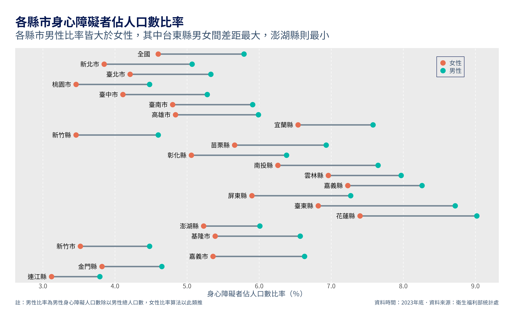

{kind=link}
library(tidyverse)
library(readxl)身心障礙者人數佔總人口比率-資料取得、整理及視覺化
R
tidyverse
ggplot
dot plot
展示如何從Excel檔案中提取資料，再以點圖(dot plot)的方式做視覺化。
在這篇文章中，我會展示如何使用R從Excel檔案中提取資料，並整理成需要的形式，最後再將各縣市男性與女性的身心障礙者人數佔總人口數比率以點圖(dot plot)的方式做視覺化。目標的圖表長這樣： 
取得資料並擷取需要的數據
我想取得的資料是：
2023年各縣市身心障礙者人數佔總人口比率資料，其中包含男性與女性的數據
下載資料
使用的資料是從衛生福利部統計處的網站下載，在「衛生福利公務統計」>「社會福利公務統計一覽表」中的「2.3.1身心障礙者人數按類別及縣市別分」統計表。大致上長這樣：
統計表是Excel格式，資料內容包含：
身心障礙者人數，分男性與女性
各類別身心障礙者人數
身心障礙者人數佔總人口比率
上面三項資料依照各縣市區分
從2011年到2023年的資料
我們需要將資料從Excel檔案中提取出來。
從Excel表中擷取需要的資料
首先，讓我們先載入需要的library：
tidyverse是用來整理資料及繪製統計圖表readxl則是用來讀取Excel檔案
接著，我們用readxl中的read_xlsx來讀取人數佔比率的資料：
read_xlsx("data/2.3.1身心障礙者人數按類別及縣市別分.xlsx",
sheet = "2023",
range = anchored("A8", dim = c(23, 17)),
col_names = as.character(1:17)) |> #從excel檔中提取所需的資料
select("1", "15","16", "17") |> #挑選需要的變數
rename("region" = "1", #對變數重新命名
"total" = "15",
"male" = "16",
"female" = "17") 我會一項接著一項解釋這段程式碼做了什麼：
read_xlsx：第一項要放入Excel檔案的位置。
sheet則是指定你要的哪一個資料表，這裡放入"2023"代表你想要讀取的是名字為「2023」的工作表。如果放入數字的話，則是告訴這個函數要讀取第幾個表，舉例來說，若設定sheet = 5則會讀取第5個表。range是用來指定要選取的儲存格範圍。anchored("A8", dim = c(23, 17))指定的是儲存格A8向下23列、向右17行的資料。其他指定資料範圍的方法包括
range = "B3:D6"來指定一個長方形的左上角及右下角、range = cell_rows(3:5)來選取第3到5行的資料，細節可參考這裡。col_names = as.character(1:17)則是暫時給每一個column暫時的名稱。會這麼做的原因是，如果不這麼做，column name中會包含中文，我在寫code的途中這麼做的時候，我的R session不斷地當機，必須改成不包含中文的名稱才能順利讀取資料。
從Excel中可以知道第1、15、16、17是我們需要的變數，
select("1", "15","16", "17")用來選取我們要的columns。rename("region" = "1", "total" = "15", "male" = "16", "female" = "17")則是將column name改成更好理解的名稱。
提取出來的資料集，就會包含我們所需要的資料：
df <- read_xlsx("data/2.3.1身心障礙者人數按類別及縣市別分.xlsx",
sheet = "2023",
range = anchored("A8", dim = c(23, 17)),
col_names = as.character(1:17)) |> #從excel檔中提取所需的資料
select("1", "15","16", "17") |> #挑選需要的變數
rename("region" = "1",
"total" = "15",
"male" = "16",
"female" = "17") #對變數重新命名
df# A tibble: 23 × 4
region total male female
<chr> <dbl> <dbl> <dbl>
1 總計 Total 5.19 5.79 4.6
2 新北市 New Taipei City 4.44 5.07 3.85
3 臺北市 Taipei City 4.74 5.33 4.21
4 桃園市 Taoyuan City 3.96 4.48 3.46
5 臺中市 Taichung City 4.68 5.28 4.11
6 臺南市 Tainan City 5.35 5.91 4.8
7 高雄市 Kaohsiung City 5.4 5.99 4.84
8 宜蘭縣 Yilan County 7.06 7.58 6.54
9 新竹縣 Hsinchu County 4.04 4.6 3.46
10 苗栗縣 Miaoli County 6.32 6.93 5.66
# ℹ 13 more rows資料整理
在進入視覺化之前，我們還需對資料做兩項處理：
- 將地區(region)變數中，縣市英文名稱的部分去除。
- 將資料的架構轉換成”tidy”的形式，以利使用ggplot來做視覺化。
整理地區的文字
你可以觀察到，各縣市的文字中包含縣市的英文，為了能將縣市名稱更簡潔的呈現在圖表中，我們要剔除英文名稱。
首先，我們先將地區名稱中英文的部分分開來：
df |> separate_wider_delim(
cols = region,
delim = " ",
names = c("region", "region_eng"),
too_many = "drop"
)# A tibble: 23 × 5
region region_eng total male female
<chr> <chr> <dbl> <dbl> <dbl>
1 總計 "" 5.19 5.79 4.6
2 新北市 "New" 4.44 5.07 3.85
3 臺北市 "Taipei" 4.74 5.33 4.21
4 桃園市 "Taoyuan" 3.96 4.48 3.46
5 臺中市 "Taichung" 4.68 5.28 4.11
6 臺南市 "Tainan" 5.35 5.91 4.8
7 高雄市 "Kaohsiung" 5.4 5.99 4.84
8 宜蘭縣 "Yilan" 7.06 7.58 6.54
9 新竹縣 "Hsinchu" 4.04 4.6 3.46
10 苗栗縣 "Miaoli" 6.32 6.93 5.66
# ℹ 13 more rowsseparate_wider_delim()函數的功能是將字串根據某個符號為分界，來分開為不同行。cols指定要分開的對象，這裡我們要分開的目標是region這一行。delim則是指定要以什麼文字或符號分開，這裡我們以中英文之間的空格做區分，所以delim = " "。names是指定你分開後的行要叫什麼名稱。如果以仔細觀察，可以發現
region中的文字有的包含不只一個空格，因為我們只想以第一個空格做切分，所以設定too_many = "drop"把多的部分都丟掉
接著我們再把不需要的region_eng丟掉，並將region中的「總計」轉換成「全國」：
df <- df |> separate_wider_delim(
cols = region,
delim = " ",
names = c("region", "region_eng"),
too_many = "drop"
) |>
select(-2) |>
mutate(
region = if_else(region == "總計", "全國", region)
)
df# A tibble: 23 × 4
region total male female
<chr> <dbl> <dbl> <dbl>
1 全國 5.19 5.79 4.6
2 新北市 4.44 5.07 3.85
3 臺北市 4.74 5.33 4.21
4 桃園市 3.96 4.48 3.46
5 臺中市 4.68 5.28 4.11
6 臺南市 5.35 5.91 4.8
7 高雄市 5.4 5.99 4.84
8 宜蘭縣 7.06 7.58 6.54
9 新竹縣 4.04 4.6 3.46
10 苗栗縣 6.32 6.93 5.66
# ℹ 13 more rowsselect(-2)的意思是選擇除了第2行以外的變數。mutate( region = if_else(region == "總計", "全國", region) )則是當region中的值是「總計」時用「全國」取代它，其他的時候則保留原本region的值。
轉換資料架構
我們需要資料是tidy的形式，代表資料集中的每一個行都是一個變數，每一個儲存格中都只儲存一個值(更詳細的定義及解釋可參考這裡)。原本的資料中，性別(gender)這個變數沒有被列在一個行中，而是分別散佈在三個不同的行中，我們可以使用pivot_longer做到這件事：
df <- df |> pivot_longer(
cols = c("total", "male", "female"),
names_to = "gender",
values_to = "ratio")pivot_longer是將原本的資料「拉長」，將存於行標題中的資料放到儲存格裡。cols指定要轉換的行，我們要將性別的資料放下來到儲存格中，所以設定cols = c("total", "male", "female")。names_to指定我們放下來的資料那一行的標題名稱，因為是性別資料，因此設定為names_to = "gender"。原本在
"total", "male", "female"下方的資料是比率，所以透過values_to = "ratio"將它們命名為ratio。
整理完後的資料就會呈現這樣的形式：
# A tibble: 69 × 3
region gender ratio
<chr> <chr> <dbl>
1 全國 total 5.19
2 全國 male 5.79
3 全國 female 4.6
4 新北市 total 4.44
5 新北市 male 5.07
6 新北市 female 3.85
7 臺北市 total 4.74
8 臺北市 male 5.33
9 臺北市 female 4.21
10 桃園市 total 3.96
# ℹ 59 more rows整理好資料後，我們終於可以進入視覺化的部分。
製作視覺化圖表
我會一步一步的說明要如何畫出這樣的圖形。
主要圖形
先畫出每個縣市男性與女性比率的點，以及連接的線段：
df |>
filter(gender != "total") |>
ggplot(aes(x = ratio, y = region)) +
geom_line() +
geom_point() 因為我們不需要總體的比率，所以用
filter(gender != "total")將它們篩選掉。我們想要將縣市的位置畫在y軸，比率的資料畫在x軸，所以
ggplot中的aes會設定成aes(x = ratio, y = region)。geom_line及geom_point分別畫出線段及點。
為了更容易區分男性及女性的資料，我會將它們塗上不同的顏色。除此之外，還會設定點的大小以及線段的粗細：
df |>
filter(gender != "total") |>
ggplot(aes(x = ratio, y = region)) +
geom_line(linewidth = 1.5, color = "#758694") +
geom_point(aes(color = gender), size = 2) geom_line中，linewidth及color是用來調整線的粗細及顏色。geom_point中的aes(color = gender)則是說我們要根據gender這個變數來調整點的顏色。
你應該已經發現了，Ｒ這時沒辦法顯示中文字，我們可以用指定中文字型的方式來解決：
df |>
filter(gender != "total") |>
ggplot(aes(x = ratio, y = region)) +
geom_line(linewidth = 1.5, color = "#758694") +
geom_point(aes(color = gender), size = 2) +
theme(
text = element_text(family = "Noto Sans TC")
)theme函數是用來設定圖表的整體風格的，之後我們會再用到它。theme函數中調整圖案風格的方法大都是以element_{物件種類}的方式分做設定。舉例來說，我們要調整的是文字，所以是用element_text，如果要調整的物件是線條的話，那就是用element_line。family = "Noto Sans TC"則是將字體設定為煩繁體中文的思源黑體。
為了保持一致性，我會將縣市間呈現的順序調整成與原始資料集中呈現的一樣。做法是將region這個變數調整成Ｒ的factor類型變數，再指定其level，訂定縣市的先後順序。所以我們先做一個表示level的vector：
region_level <- df |>
select(region) |>
distinct(region) |>
pull() |>
rev()
region_level [1] "連江縣" "金門縣" "嘉義市" "新竹市" "基隆市" "澎湖縣" "花蓮縣" "臺東縣"
[9] "屏東縣" "嘉義縣" "雲林縣" "南投縣" "彰化縣" "苗栗縣" "新竹縣" "宜蘭縣"
[17] "高雄市" "臺南市" "臺中市" "桃園市" "臺北市" "新北市" "全國" 再將region轉化為factor：
p <- df |>
filter(gender != "total") |>
ggplot(aes(x = ratio, y = factor(region, region_level))) + #轉換為factor
geom_line(linewidth = 1.5, color = "#758694") +
geom_point(aes(color = gender), size = 2) +
theme(
text = element_text(family = "Noto Sans TC")
)
p調整Scale變數
在圖表中，我們在x軸畫出比率的資料，在y軸分別縣市，用顏色區分性別。在ggplot2中，我們可以使用scale_{aes}_{type}的方式調整這三項要素呈現的方式，aes指的是要設定的要素，type則是定義我們設定這個aes的方法或要呈現的形式。
指定不同性別的顏色
p + scale_color_discrete(
labels = c("女性", "男性"), #改變性別的呈現方式
type = c("#E76F55", "#01B8A9") #指定顏色
)因為要調整的是顏色，所以是
scale_color_{type}。另外，因為性別是離散的變數，所以是scale_color_discrete。labels指定的是呈現性別這個變數的標籤，你可以看到右方的圖示改變了。type則是指定要呈現的顏色。
調整x軸標籤的格式
我們的目標圖形中，x軸的數字是呈現到小數點後一位，我們可以用scales這個library來設定：
p + scale_x_continuous(
labels = scales::label_number(accuracy = 0.1),
breaks = seq(3, 9, 1)
)scales::label_number(accuracy = 0.1)是將你所呈現的數字的精準度以0.1為一單位。在scaleslibrary中，還有其他函數能指定你數值呈現的方式，例如label_dollar可以將數字轉化為貨幣的形式，更多細節可以參考這裡。breaks = seq(3, 9, 1)則是設定你要呈現標記出數值的地方。用下面這個例子來讓你更暸解其運作方式，如果我們x軸標籤只想要顯示5和8兩個數值：p + scale_x_continuous( labels = scales::label_number(accuracy = 0.1), breaks = c(5, 8) )
將上面2個部分整合起來：
p <- p +
scale_color_discrete(
labels = c("女性", "男性"), #性別標籤
type = c("#E76F55", "#01B8A9") #指定顏色
) +
scale_x_continuous(
labels = scales::label_number(accuracy = 0.1), #以0.1為最小單位
breaks = seq(3, 9, by = 1) #標記3到9
)
p直接將縣市標示在圖形旁邊
為了讓讀者更容易辨別每一個線段屬於哪一個縣市，我們可以將縣市的文字標注在線段旁邊。我們首先製作一個資料集用來指定要標記的文字及標注的位置：
loca <- df |>
filter(
gender == "female"
) |>
mutate(
position = ratio - .25
)
loca# A tibble: 23 × 4
region gender ratio position
<chr> <chr> <dbl> <dbl>
1 全國 female 4.6 4.35
2 新北市 female 3.85 3.6
3 臺北市 female 4.21 3.96
4 桃園市 female 3.46 3.21
5 臺中市 female 4.11 3.86
6 臺南市 female 4.8 4.55
7 高雄市 female 4.84 4.59
8 宜蘭縣 female 6.54 6.29
9 新竹縣 female 3.46 3.21
10 苗栗縣 female 5.66 5.41
# ℹ 13 more rows因為我們要將文字標記在女性比例的左側，所以我們只保留女性的資料(
filter(gender == "female"))。文字的位置要放在女性比率的左側一點點，所以透過將比率的值減去一點點，新設立一個新變數來表示位置
mutate( position = ratio - .2 )。
我們使用geom_text來標注文字：
p <- p +
geom_text(data = loca,
aes(y = region,
x = position,
label = region,
family = "Noto Sans TC"),
size = 4)
p因為我們現在要用
loca來畫圖，所以要將資料設定為loca，data = loca。在
aes()中，x和y是指定文字的座標，label則是我們要標記的文字，family是中文字型。
目前文字看起來還不是很美觀，我會留在最後再做調整。
加入標題及註解
標題及註解能正確的告訴讀者我們所呈現數據的意義，是必不可少的。我們使用labs()來加上標題及註解：
p <- p +
labs(
title = "各縣市身心障礙者佔人口數比率",
subtitle = "各縣市男性比率皆大於女性，其中台東縣男女間差距最大，澎湖縣則最小",
x = "身心障礙者佔人口數比率（％）",
caption = c("註：男性比率為男性身心障礙人口數除以男性總人口數，女性比率算法以此類推",
"資料時間：2023年底．資料來源：衛生福利部統計處"),
)
p大致上應該很好理解如何使用，只有兩處要詳細說明：
x設定x軸的標題，所以我們能以此類推，y就是設定y軸的標題。因為我選擇直接將縣市飆在線段旁邊，而且我認為不用加y軸標題也能知道他們代表不同縣市，所以沒有設定y軸標題。在
caption中，設定了兩段文字，但目前只顯示了其中一個，我們在之後會調整caption的位置，那時兩段文字才會都顯示出來。
調整圖形的樣式
繪製圖形的最後一步是調整圖形中各要素的呈現方式。
調整兩軸的文字及標記
p <- p + theme(
axis.title.y = element_blank(),
axis.title.x = element_text(size = 12),
axis.text.x = element_text(size = 10),
axis.text.y = element_blank(),
axis.ticks.length = unit(0, "cm")
)
paxis開頭的函數是用來調整x軸及y軸相關的要素的。axis.title是用來設定軸的標題：axis.title.y = element_blank()是將y軸的標題拿掉，本來是自動設定的factor(region, region_level)。axis.title.x = element_text(size = 8)則是設定x軸標題的大小，也就是「身心障礙者佔人口數比率（％）」這段文字的大小。
axis.text則是設定軸上的文字，也就是縣市和比率的數值：- 因為我們已經將縣市標記在線段旁邊了，所以拿掉x軸上標記縣市的文字
axis.ticks.length則是設定軸文字旁標記的那個小小線段的長度，我要拿掉它們，所以將長度設定為0。
調整圖示
p <- p + theme(
legend.text = element_text(size = 10),
legend.position = "inside",
legend.position.inside = c(.9, .9),
legend.background = element_rect(fill = "transparent",
linewidth = .4,
color = "#071952"),
legend.title = element_blank()
)
plegend.position和legend.position.inside是用來設定圖示的位置，將其設定在圖形的裡面，並調整到一個合適的位置。legend.background是用來設定圖是這個方框的，因為是長方形，所以用element_rect。legend.title = element_blank()則是拿掉圖示的標題。
調整格線
p <- p + theme(
panel.grid.minor = element_blank(),
panel.grid.major.y = element_blank(),
panel.grid.major.x = element_line(linetype = 2)
)
ppanel指的是中間繪圖區的部分，格線要從這裡調整，基本上這裡做的調整是指保留垂直的格線，並設定為虛線。
調整標題、註解的樣式和圖片的邊框
p <- p + theme(
plot.title = element_text(size = 22,
color = "#071952",
face = "bold",
margin = margin(t = 0, b = 2)),
plot.subtitle = element_text(size = 16, margin = margin(b = 5)),
plot.caption = element_text(size = 10, hjust = c(0,1)),
plot.margin = unit(c(0.5, 0.5, 0.5, 0.5), "cm"),
)
pplot指的是整個圖片，所以標題、註解以及邊界都屬於這裡。element_text中的margin可以在文字的周圍加上邊界，margin()函數中可以設定t、r、b、l四個參數，分別為top、right、bottom、left，可以用trouble這個字來記憶順序。在
plot.catption中，hjust是用來調整水平位置的，因為我們的caption有兩個，所以給它兩個值，分別代表放在最左邊以及最右邊。
如此一來，我們就得到了目標的圖表了！
至此，這次的旅程就結束了，歡迎你下次再跟我一起踏上視覺化之旅。
以下是完整的資料處理和視覺化的code
資料處理：
Code
library(tidyverse)
library(readxl)
library(writexl)
# Helper functions
## tidying the data
get_gender_longer <- function(df){
df <- df |> pivot_longer(
cols = c("total", "male", "female"),
names_to = "gender",
values_to = "ratio")
return(df)
}
## adjusting the format of the region data
adjusting_format_after2021 <- function(df, y){
df <- df |> separate_wider_delim(
cols = region,
delim = " ",
names = c("region", "2"),
too_many = "drop"
) |>
select(c(-2))|>
mutate(
region = if_else(region == "總計", "全國", region)
) |>
mutate(
year = y
) |>
select(
year, region, gender, ratio
)
return(df)
}
adjusting_format_before2020 <- function(df, y){
df <- df |> separate_wider_position(
cols = region,
widths = c(region = 3, 1),
too_many = "drop"
) |>
mutate(
region = if_else(region == "總計T", "全國", region)
) |>
mutate(
year = y
) |>
select(
year, region, gender, ratio
)
return(df)
}
## get the ratio data from 2021 to 2023
get_ratio_after2021 <- function(y){
# read the data from an excel file
df <- read_xlsx("data/2.3.1身心障礙者人數按類別及縣市別分.xlsx",
sheet = y,
range = anchored("A8", dim = c(23, 17)),
col_names = as.character(1:17)) |>
select(c(c("1", "15","16", "17"))) |> # selecting columns we want
rename("region" = "1",
"total" = "15",
"male" = "16",
"female" = "17") # rename the columns
# tidying the data
df <- get_gender_longer(df)
# adjusting the format of the region data
df <- adjusting_format_after2021(df, y)
return(df)
}
## get the ratio data from 2012 to 2021
get_ratio_before2020 <- function(y){
# read the data from an excel file
df <- read_xlsx("data/2.3.1身心障礙者人數按類別及縣市別分.xlsx",
sheet = y,
range = anchored("A8", dim = c(23, 24)),
col_names = as.character(1:24)) |>
select(c(c("1", "22","23", "24"))) |> # selecting columns we want
rename("region" = "1",
"total" = "22",
"male" = "23",
"female" = "24") # rename the columns
# tidying the data
df <- get_gender_longer(df)
# adjusting the format of the region data
df <- adjusting_format_before2020(df, y)
return(df)
}
# main section
df_all <- NA
for(y in 2012:2023){
if (y <= 2020) {
df <- get_ratio_before2020(as.character(y))
} else {
df <- get_ratio_after2021(as.character(y))
}
if (is_tibble(df_all)) {
df_all <- rbind(df_all, df)
} else {
df_all <- df
}
}
#write_csv(df_all, "data/佔總人數比率.csv")視覺化：
Code
library(tidyverse)
#read data from a csv file and rename the columns
df <- read_csv("data/佔總人數比率.csv",
show_col_types = FALSE) |>
filter(year == "2023",
gender %in% c("male", "female"))
region_level <- df |>
select(region) |>
distinct(region) |>
pull() |>
rev()
p <- ggplot(df, aes(x = ratio, y = factor(region, region_level))) +
geom_line(aes(group = region), size = 1.5, color = "#758694") +
geom_point(aes(color = gender), size = 5) +
labs(
title = "各縣市身心障礙者佔人口數比率",
subtitle = "各縣市男性比率皆大於女性，其中台東縣男女間差距最大，澎湖縣則最小",
x = "身心障礙者佔人口數比率（％）",
caption = c("註：男性比率為男性身心障礙人口數除以男性總人口數，女性比率算法以此類推",
"資料時間：2023年底．資料來源：衛生福利部統計處"),
) +
scale_x_continuous(labels = scales::label_number(accuracy = 0.1),
breaks = seq(0, 10, 1)) +
scale_color_discrete(labels = c("女性", "男性"),
type = c("#E76F51", "#00B8A9")) +
theme(
text = element_text(family = "Noto Sans TC", color = "#364F6B"),
# axis
axis.title.y = element_blank(),
axis.title = element_text(size = 16),
axis.text = element_text(size = 14),
axis.text.y = element_blank(),
axis.ticks.length = unit(0, "cm"),
#plot
plot.title = element_text(size = 27,
color = "#071952",
face = "bold",
margin = margin(t = 5, b = 5)),
plot.subtitle = element_text(size = 22, margin = margin(b = 15)),
plot.caption = element_text(size = 12, hjust = c(0,1)),
plot.margin = unit(c(1.2,1.2,1.2,1.2), "cm"),
#legend
legend.text = element_text(size = 14),
legend.position = c(.9, .92),
legend.background = element_rect(fill = "transparent",
linewidth = .4,
color = "#071952"),
legend.title = element_blank(),
#panel
panel.grid.minor = element_blank(),
panel.grid.major.y = element_blank(),
panel.grid.major.x = element_line(linetype = 2)
)
loca <- df |>
filter(
gender == "female"
) |>
mutate(
ratio = ratio - .2
)
p <- p + geom_text(data = loca,
aes(y = region, x = ratio, label = region, family = "Noto Sans TC"),
size=5)
p
# ggsave("身心障礙者佔總人口數比率.png",
# path = "img/",
# width = 16,
# height = 10,
# dpi = 400)